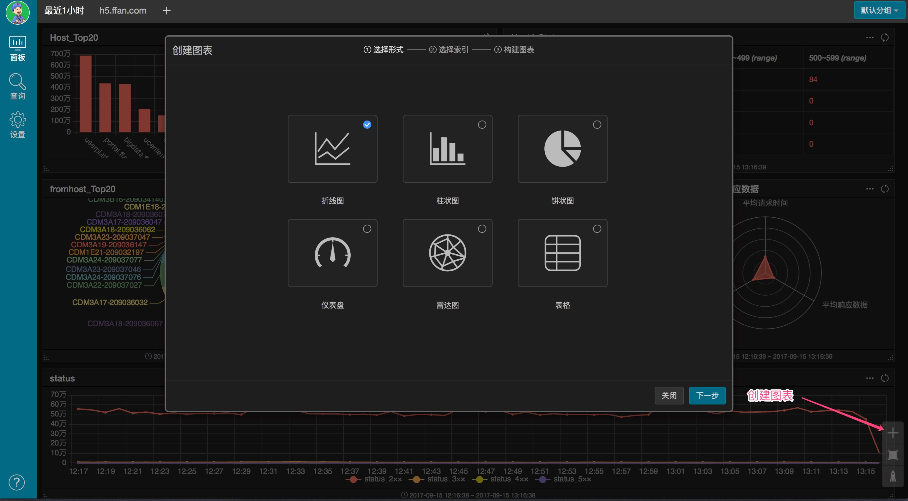

1 概述
这是一款Elasticsearch（本文简称ES）可视化工具，在这里你可以方便的查询数据、构建统计图表。本系统惟一依赖您的ES地址，并不会对您的ES集群执行任何写入操作，请您放心使用。
推荐浏览器IE8+、Safafi、Chrome
2 ES集群和索引
2.1 录入ES集群
您登录之后，系统将自动跳转到［设置－ES集群］页面。如果您还没有录入您的ES集群，页面将会只有一个的按钮。根据对话框，添加ES集群。成功添加ES集群后，这个页面会自动刷新。
2.2 设置ES集群
点击［设置］图标按钮，可以修改当前ES集群的地址，也可以新增一个ES集群的地址，还可以从历史ES集群中选一个作为当前的ES集群。
2.3 录入ES索引
一个ES集群包含多个索引，索引相当于数据库的库；ES数据存储在文档中，文档相当于普通数据库的表。为了方便后续构建查询和图表，您需要将使用到的”索引\文档”录入系统。点击按钮录入索引。
对于动态索引，* 号代表动态索引的后缀, 例如"some_index_yyy-mm-dd"可写为"some_index*”。
3 查询
3.1 查询
点击［查询］页面右下角工具栏［＋］按钮创建查询。
3.2 查询分组
[设置－查询］页面更改查询名称，增删查询分组和查询分组重命名
4 统计面板
4.1 统计面板
统计面板是图表的集合，一个统计面板分组包含多个统计面板。
4.2 统计面板分组
统计面板名称修改在［设置－统计面板管理］中完成；统计面板分组的创建删除也在这里完成。
4.3 图表
点击［统计］页面右下角工具栏［＋］按钮创建图表。按弹出框提示，分三步创建图表。

4.3.1 折线图示例

4.3.2 柱状图示例

4.3.3 饼状图示例
4.3.4 仪表盘示例
4.3.5 雷达图示例
4.3.6 表格示例
5 分享
5.1 分享查询、图表、面板
5.2 管理分享
6 团队帐号
"团队帐号"是一个供多个团队成员共同使用的帐号。 正常用户可以创建团队帐户, 自己便是团队帐户的管理员; 管理员身份切换到该团队帐户, 可以添加多个团队成员, 给予"可查看可编辑"或"仅查看"的权限。
6.1 创建
6.2 成员管理
"我创建的团队"我是管理员身份, 切换到该团队, 在[设置-团队成员管理]页面, 可以对团队成员进行管理。
非团队账号、非团队管理员无权管理团队成员, 是看不到这个页面的。

6.2 帐户切换
如果我加入了某个团队, 点击"退出登录时", 将弹出"切换帐户"的对话框; 否则将直接退出登录。